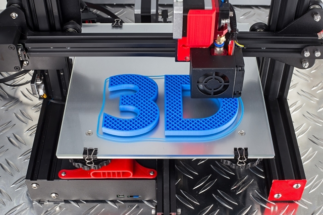

Een PCB, in de volksmond ook wel printplaat, is een plaat met schakelingen die elektronische componenten met elkaar verbinden. Een printplaat wordt vandaag de dag veel gebruikt in computers en andere elektronische apparaten en worden gemaakt van een elektrisch niet geleidend metaal.
Op een printplaat kunnen elektrische componenten vastgemaakt worden, die op zogenaamde pads vast gesoldeerd kunnen worden aan de printplaat. Door koperen sporen kunnen deze compontenten weer onderling aan elkaar verbonden worden en dit zorgt voor de vereiste elektrische verbinden tussen de componenten aangezien deze elektrisch geleiden. Dat is ook de reden waarom de rest van de printplaat gemaakt is van een niet geleidend materiaal.
 Het probleem wat vandaag de dag speelt is dat de grondstoffen waarvan de printplaten gemaakt worden niet of nauwelijks leverbaar zijn waardoor dit enorme vertraging oplevert in de productie, wat op zijn beurt weer leidt tot een toename in de prijs van deze elektrische apparaten. Zo neem ik als voorbeeld de PS5, deze is momenteel amper aan te komen doordat de juiste chips niet leverbaar zijn.
Het probleem wat vandaag de dag speelt is dat de grondstoffen waarvan de printplaten gemaakt worden niet of nauwelijks leverbaar zijn waardoor dit enorme vertraging oplevert in de productie, wat op zijn beurt weer leidt tot een toename in de prijs van deze elektrische apparaten. Zo neem ik als voorbeeld de PS5, deze is momenteel amper aan te komen doordat de juiste chips niet leverbaar zijn.
3D printen is het proces om een digitaal bestand om te zetten in een driedimensionaal tastbaar object. Zo’n tastbaar object is opgebouwd uit opeenvolgende lagen van filament totdat het volledige object gecreëerd is. Door gebruik te maken van deze lagen is het mogelijk om zeer complexe onderdelen te printen die anders lastig te produceren zijn. Deze lagen filament kun je eigenlijk zien als allemaal horizontale dwarsdoorsnedes van het eindproduct en deze worden vervolgens allemaal op elkaar gemonteerd. 
Bij 3D printen start je met het ontwerpen van een virtueel ontwerp van het eindproduct dat je wilt maken met 3d printen, dit is bijvoorbeeld een CAD-tekening. Dit ontwerp stuur je vervolgens naar de 3D printer die dit voor jou gedetailleerd en laagje voor laagje voor jou uit kan printen. 3D printen is momenteel een van de grootste toepassingen binnen de IoT-technologie en daarom zeker iets om binnen de Smart Industry toe te passen.